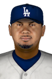

|
|
|  |
Los Angeles Loses Jansen for 8-9 Weeks Friday, May 1st, 2020 A blow for Kenley Jansen today -- team doctors were able to determine the full extent of his recent injury. He will miss 8-9 weeks with a partially torn labrum. Jansen suffered the injury on 04/29/2020. The team will likely place Jansen on the injured list today. Jansen has 5 relief appearances this season with no saves. Jansen has also compiled a 1-0 won-lost mark with a 2.84 ERA. In 6.1 innings he has fanned 5. |


|